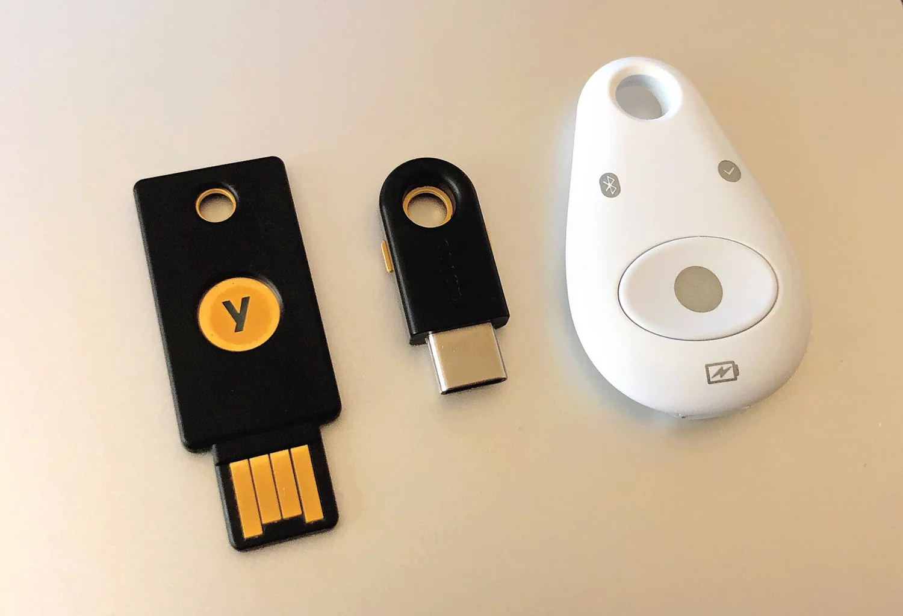
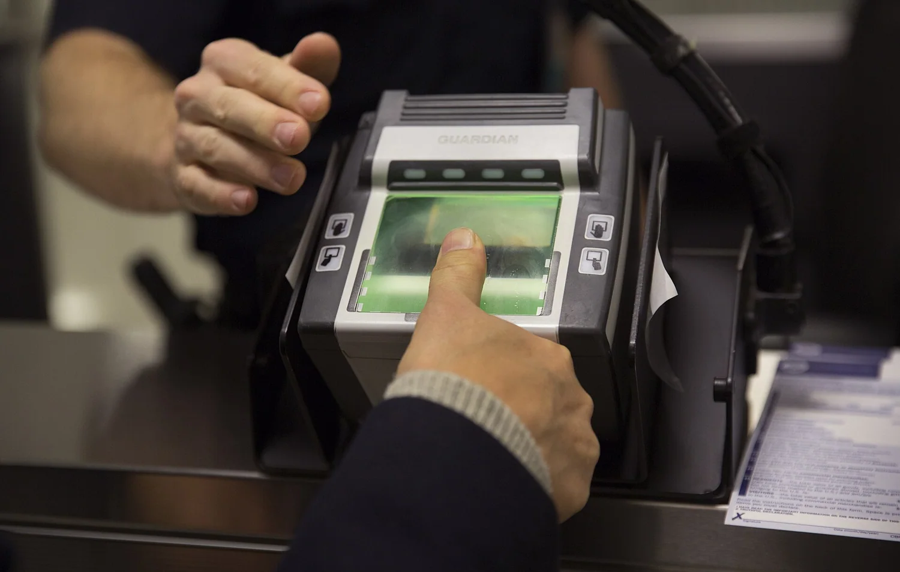
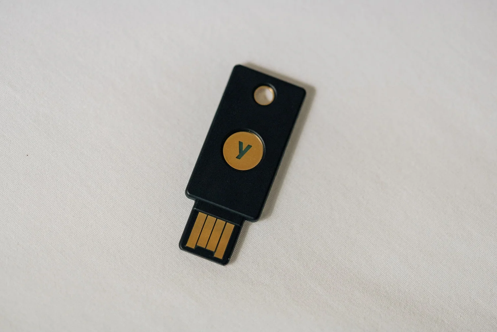
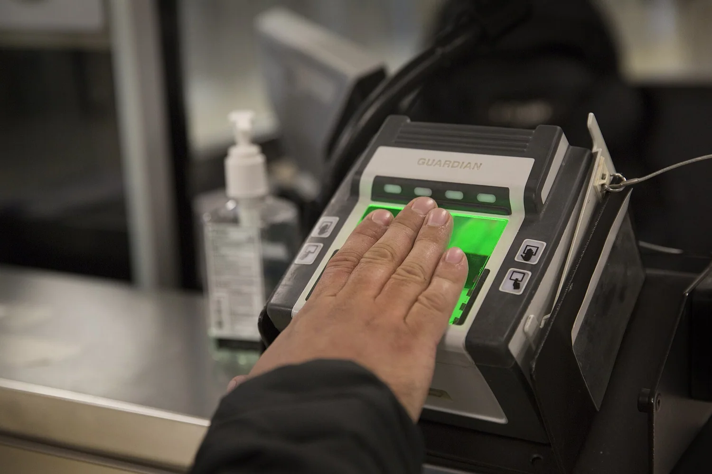
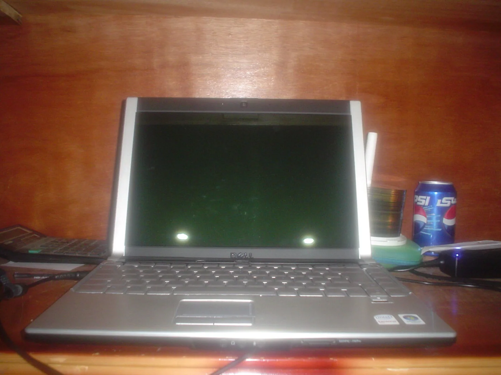
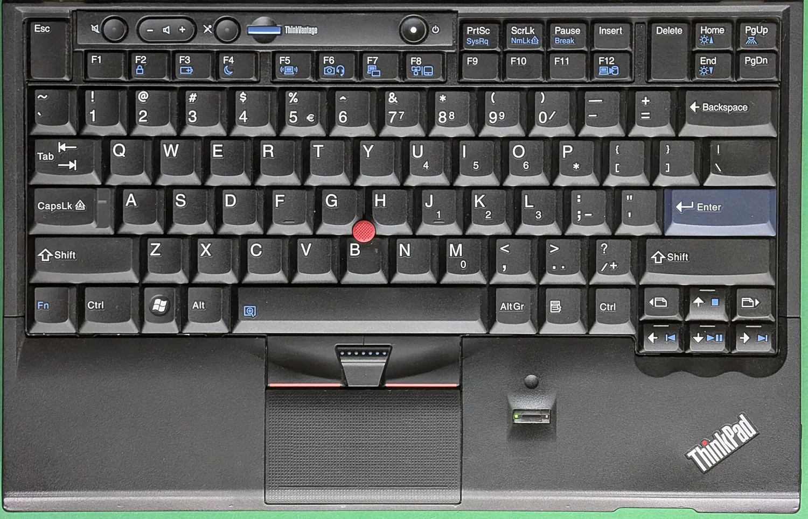
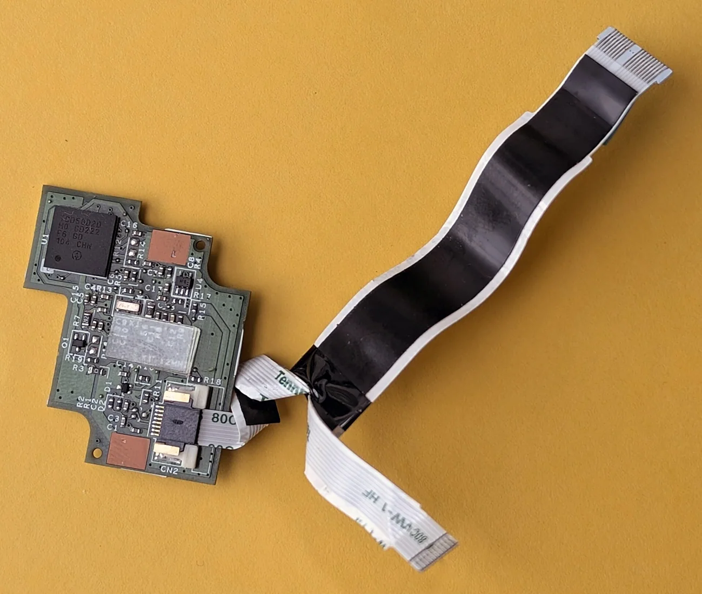
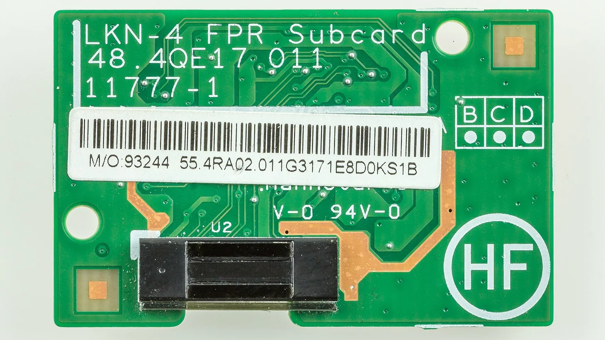
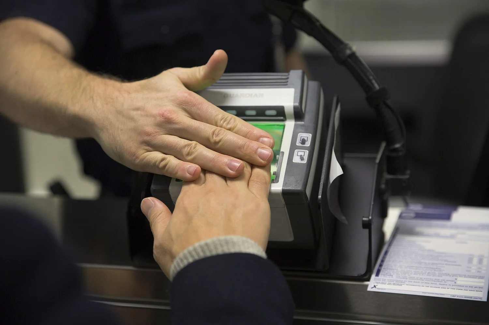

تقنية وأمن رقمي · بحث 5 نوفمبر 2026
مفاتيح المرور: هل بدأ عصر ما بعد كلمة السر؟

ليلة اختفت فيها كلمة المرور
تخيل أن تصلك رسالة عاجلة تدعوك إلى تسجيل الدخول لإنقاذ حسابك. تضغط رابطًا يشبه موقع البنك تمامًا، لكنك لا تكتب كلمة مرور، ولا يوجد سر يمكن نسخه من الصفحة المزيفة. هذه ليست نهاية الاحتيال الإلكتروني؛ إنها الفكرة التي تقف خلف مفاتيح المرور: تحويل إثبات الهوية من سرّ يتذكره الإنسان إلى عملية تشفير مرتبطة بالموقع الصحيح.


كيف وصلنا إلى هذه اللحظة؟
لعقود كانت كلمة المرور نقطة الضعف المتكررة: يعيد المستخدم استعمالها، أو يختار كلمة سهلة، أو يسلّمها لصفحة تصيّد مقنعة. ثم جاءت الرسائل النصية ورموز التحقق لتحسّن الحماية، لكنها لم تلغِ جميع مسارات الخداع. اعتمدت مفاتيح المرور على معايير FIDO2 وWebAuthn، بحيث يحتفظ جهاز المستخدم بمفتاح خاص، بينما يحصل الموقع على مفتاح عام للتحقق من التوقيع.

لماذا يصعب خداع مفتاح المرور؟
عند إنشاء مفتاح مرور، يُربط الاعتماد بنطاق الموقع. إذا نقلك المهاجم إلى نطاق مشابه في الشكل ومختلف تقنيًا، فلن يوقّع المفتاح الخاص طلب المصادقة لذلك الموقع المنتحل. يستخدم الشخص بصمة الإصبع أو الوجه أو رمز قفل الجهاز للسماح باستخدام المفتاح محليًا؛ ولا يعني ذلك إرسال البصمة إلى الموقع. مع ذلك، يمكن للمحتال أن يستهدف استرداد الحساب أو يخدع الضحية للموافقة على عمليات أخرى.

الأرقام التي غيّرت النقاش في 2026
في مايو 2026 قدّر تحالف FIDO وجود خمسة مليارات مفتاح مرور مستخدم عالميًا. واستند تقريره إلى استطلاع شمل 11 ألف مستهلك و1400 صاحب قرار مؤسسي في عشر دول؛ قال 75% من المستهلكين إنهم فعّلوا مفتاح مرور في حساب واحد على الأقل. هذه نتائج استطلاع وتقديرات من الجهة المطوّرة للمعايير، وليست إحصاءً شاملًا لكل حساب في العالم. وفي أكتوبر عرض مؤتمر Authenticate 2026 نتائج مؤشر يشير إلى نجاح 93% من محاولات الدخول بمفاتيح المرور مقابل 78% للطرق التقليدية في عينة الجهات المشاركة؛ ولا ينبغي تعميم تلك النسبة على الإنترنت كله.

الحكومة تدخل التجربة
في مراجعة المركز الوطني للأمن السيبراني البريطاني المنشورة في 3 نوفمبر 2026، وصف المركز انتقال مفاتيح المرور من توصية أمنية إلى خدمات يستخدمها المواطنون، وأشار إلى استخدامها في خدمة One Login وتطبيق تابع للخدمات الصحية. أهمية الخبر ليست أن كلمات المرور انتهت؛ بل أن التقنية بدأت تدخل أنظمة عامة تتطلب إجراءات استرداد ودعمًا لمستخدمين متفاوتي الخبرة.

كيف تبدأ دون أن تفقد حسابك؟
افتح إعدادات الأمان في خدمة تدعم مفاتيح المرور، واختر إضافة مفتاح مرور، ثم اتبع تأكيد الجهاز. قبل حذف أي طريقة دخول قديمة، راجع وسائل استرداد الحساب، وحدّث رقم الهاتف والبريد الاحتياطي، وفكّر في مفتاح احتياطي على جهاز آخر أو مفتاح أمان مادي عند توفره. لا توافق على إنشاء مفتاح مرور بناءً على رابط وصل في رسالة مشبوهة؛ ادخل إلى الخدمة من تطبيقها أو عنوانها المعروف.

العقبة الأخيرة ليست التشفير
الانتقال الحقيقي لا يحدث بمجرد ظهور زر «تسجيل الدخول بمفتاح مرور». يجب أن تصبح طرق استرداد الحساب آمنة أيضًا، وأن تدعم الأنظمة القديمة الانتقال، وأن يفهم المستخدم أين تُحفظ مفاتيحه وكيف يستعيدها إذا ضاع هاتفه. لذلك يظل الوعد مشروطًا بالتنفيذ الجيد. ربما تختفي كلمة المرور من واجهة حياتنا اليومية، لكن معركة الهوية الرقمية ستستمر خلف الشاشة.